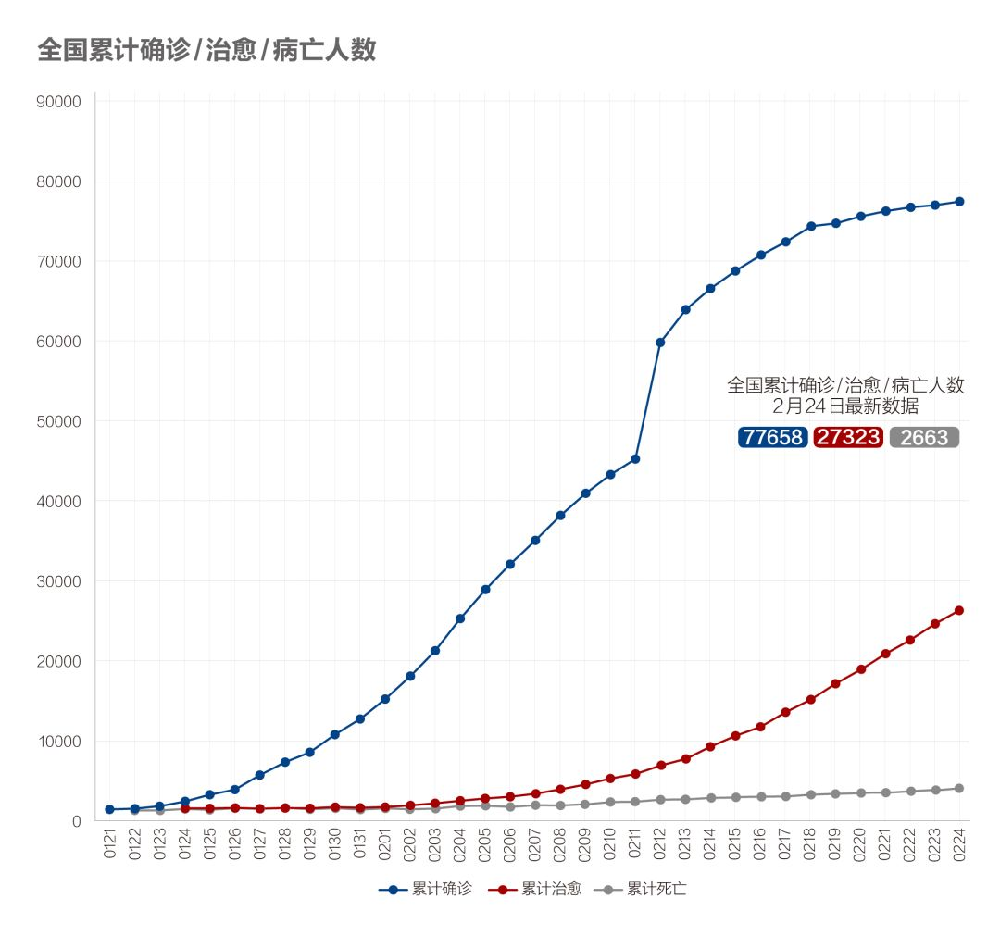
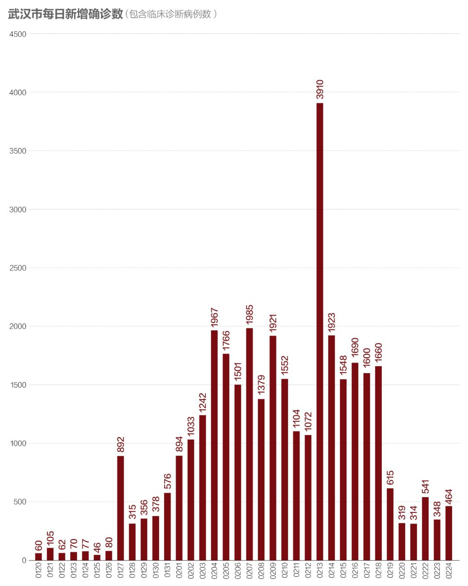
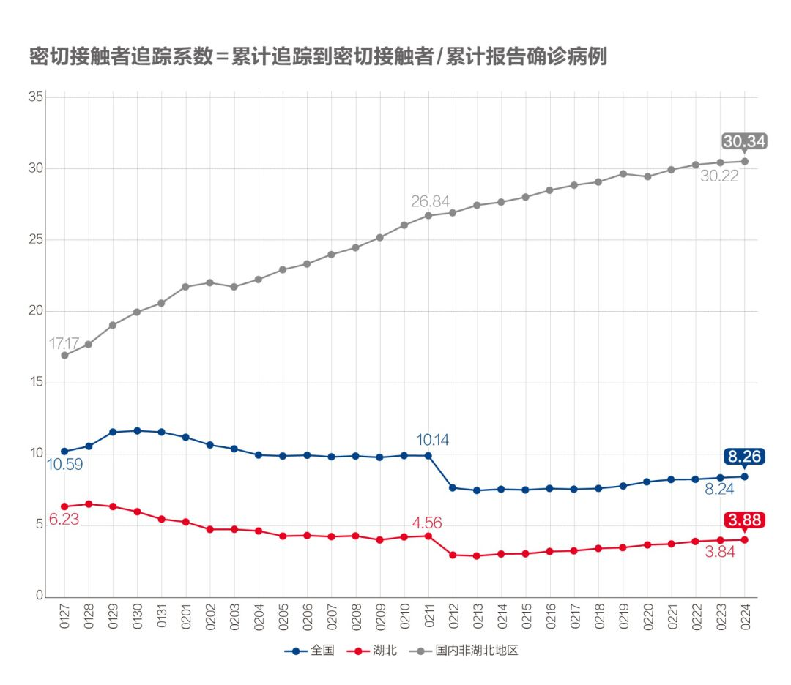
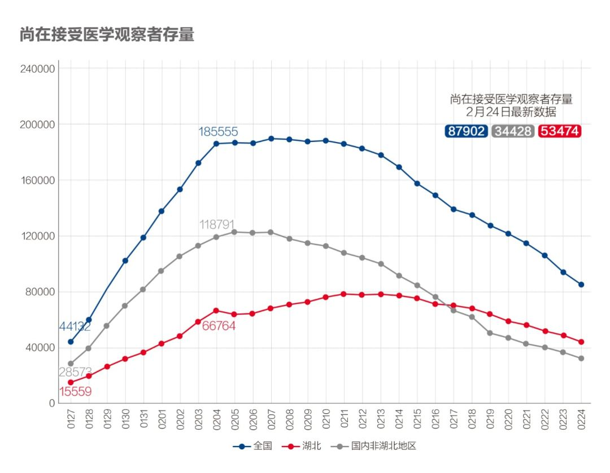
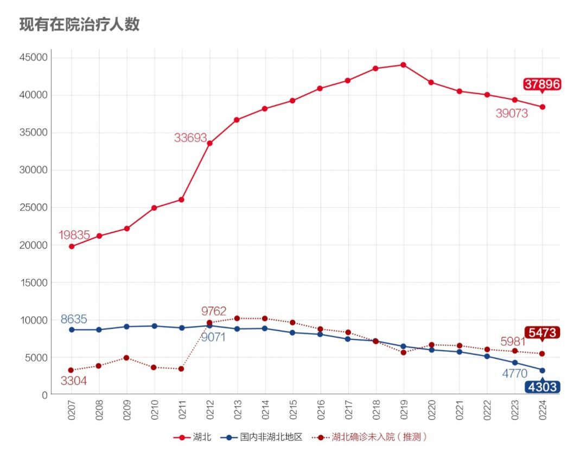
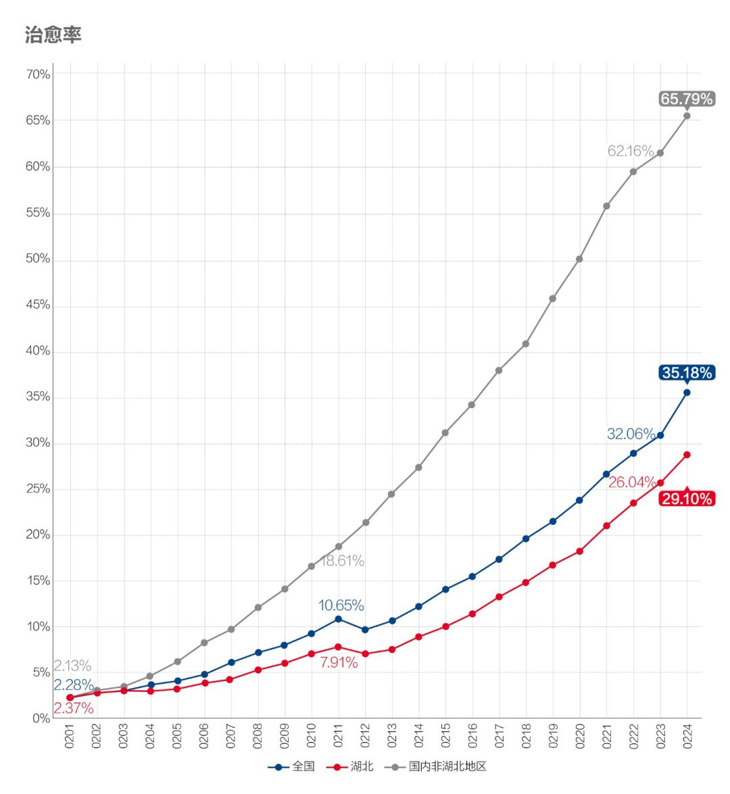
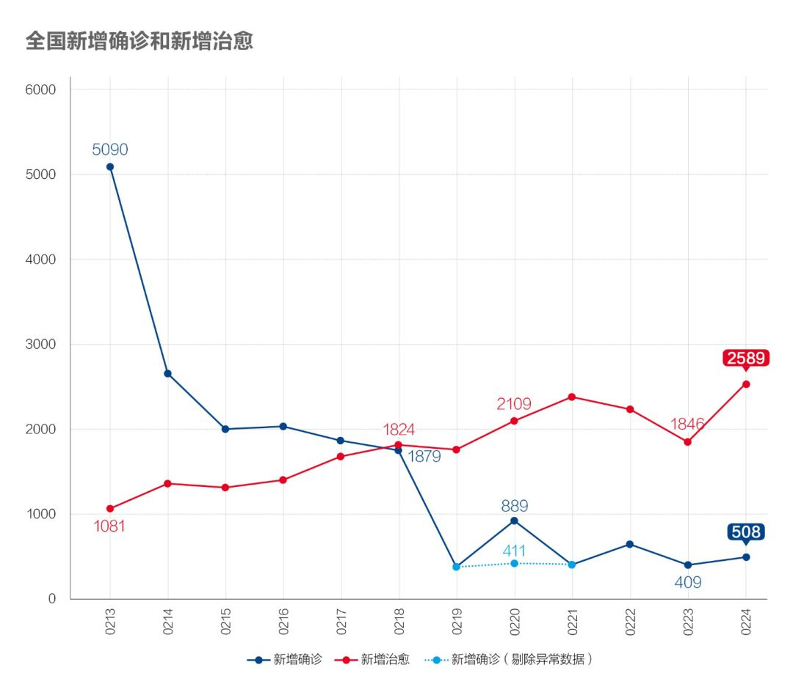

数说疫情0223：北京昨日首现零新增！湖北以外地区疫情得到遏制
原文链接 备份链接 全国21省份22日零新增，抗疫战果继续巩固。此前我们预测湖北疑似病例存量，在拉网排查取得成功后会于22日开始下降，最新数据确实印证了该预测 文 |《财经》数据研究员 徐进 图 |《财经》视觉中心 编辑 | 谢丽容 …

判断疫情是否会反复，应关注密切接触者追踪系数的变化。湖北该指标近三日为13，即出现一例追踪13人；非湖北地区近三日追踪比已达到150左右，这样的追踪系数很难出现反扑情况，尤其湖北之外
**文 | 《财经》数据研究员徐进 图 |《财经》视觉中心 **
编辑 | 谢丽容
一、 累计确诊病例：全国总病例数有望控制在8万例左右
截至2月24日24:00，全国累计报告确诊新冠肺炎病例77658例。以下为分区趋势图。
图1.1

让我们和“死神”赛跑！
图1.2

武汉以外地区的趋势线平顶已经清晰，目前可以看出：国内非湖北地区累计病例将停留在13000例以内，湖北非武汉地区将在19000例以内，武汉将在48000例左右。最主要的变数是，这个新冠肺炎究竟是像SARS一样不留长尾，还是会如指数函数所示的拖出一条长长的尾巴（最近有专家有此担心）？亦或介于两者之间？目前从非湖北地区数据看很可能不会拖出一条长尾，即便有，也会是很细的一条。
二、 新增病例：非湖北地区降至个位数，湖北续降，武汉波动
图2

国内非湖北地区24日新增病例9例，自疫情暴发以来首次降至个位数。零新增省市24个，占4/5。北京在连续两日零新增之后，又出现1例。
图3

湖北非武汉地区继续下降，按此趋势可预测3月1日前后出现零新增。
图4

武汉略显波动，但总体维持在波动向下趋势区间。
三、 确诊病例增长率：武汉以外地区增速进一步“趋零”，武汉出现反弹但并未改变波动下降趋势
图5

国内非湖北地区增长率降至0.07%以内。湖北非武汉地区降至0.20%，武汉出现波动，但并未改变波动下降趋势。
四、 密切接触者追踪：湖北及武汉的追踪力度强势提升
图6

湖北该指标还在爬升，近三日追踪比为13。考虑到湖北，特别是武汉实行社区封闭管理，人员流动和社交活动已基本被控死，有这样的追踪比，应大体合理。而由于有较大资源优势，非湖北地区近三日追踪比已达到150左右。
图7

该存量继续下降，意味着不断释放更多医疗资源、社会人力资源和隔离空间投入到新的密切接触者追踪、隔离上。
五、 疑似病例：继续下降
图8

继续下降，符合预期。
图9

湖北在拉网排查取得成功后，已连续多日下降，印证“拉网筛查”战果。也符合我们的预期。
六、 在院治疗人数：继续成规模释放病床床位
图10

在院治疗人数存量下降，继续成规模释放病床床位。推测出的“湖北确诊未入院”人数也在下降。
七、 病死率、治愈率
图11

病死率自2月上旬以来持续缓升，基本符合疫情中病死率变化正常特征。但在湖北特别是武汉，也有救治措施不到位因素。2月24日，中央应对新冠肺炎疫情工作领导小组会议特别指出武汉要落实分类收治措施，尽最大努力降低病死率。
图12

治愈率以更快速度上升。
八、新增出院和新增确诊
图13.1

图13.2

新增确诊病例数和新增治愈病例数剪刀差有所扩大，武汉释放更多医疗资源。
小结：国内非湖北地区新增病例趋零，湖北非武汉地区继续下降，武汉波动下降趋势未改。包括武汉在内，各地都有更多可用于隔离和救治的相关资源被释放。近日可能需要将境外和国外疫情动态纳入视野。

▲点击图片查看更多疫情报道
责编 | 黄端 duanhuang@caijing.com.cn
本文为《财经》杂志原创文章，未经授权不得转载或建立镜像。如需转载，请在文末留言申请并获取授权。
原文链接 备份链接 全国21省份22日零新增，抗疫战果继续巩固。此前我们预测湖北疑似病例存量，在拉网排查取得成功后会于22日开始下降，最新数据确实印证了该预测 文 |《财经》数据研究员 徐进 图 |《财经》视觉中心 编辑 | 谢丽容 …
原文链接 备份链接 为什么我们说武汉战局出现了反守为攻的转机？主要有3点 文 |《财经》数据研究员 徐进 图 |《财经》视觉中心 编辑 | 谢丽容 一、 累计确诊病例：趋势现“顶” 截至2月21日24:00，全国累计报告确诊新冠肺炎病 …
原文链接 备份链接 _ 武汉新增确诊病例和新增治愈病例今日跨过“黄金交叉”点，从此全国包括武汉在内将逐日加大释放以医院病床床位为核心的医疗资源。但也应注意到2月20日数据出现两个异常：一是非湖北地区新增病例出现巨大反弹；二是国家卫健委与湖 …
原文链接 备份链接 我们为什么预测本月20日前每日新增病例归零？五个依据 2020年2月6日，武汉市蔡甸区人民医院的隔离病房。摄影/陈卓 文 |《财经》数据研究员 徐进 图 |《财经》视觉中心 编辑 | 谢丽容 截至2月16 …
原文链接 备份链接 全国多数省区已实现“零新增”，统计上未见疫情卷土重来证据，也未发现意味着疫情死灰复燃的个案 文/《财经》数据研究员徐进 图/《财经》视觉中心 编辑/谢丽容 今天是农历二月二“龙抬头”。按北方农村传统，今起春耕大忙开 …